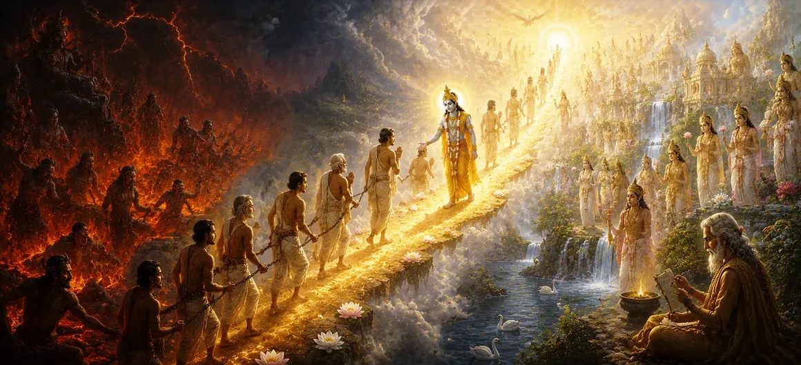

The Way of Release from Hell
Transitioning from the cosmic geography of the subterranean Patala Lokas, Chapter 16 of Uma Samhita enters the deeply psychological and spiritual domain of Narakoddhara Mahatmya—the discourse on the release from suffering and karmic bondage. Having explored the multi-layered physical architecture of creation, the scripture now turns its profound focus inward, addressing the moral realities of human action, the strict accountability of karma, and the boundless compassion of Lord Shiva that offers redemption to even the most distressed souls.
This chapter serves as a beacon of hope, elucidating that no soul is permanently trapped in darkness. Through genuine repentance, righteous alignment, acts of charity, and absolute refuge in supreme devotion, the heaviest karmic fetters can be dissolved, allowing consciousness to rise toward divine freedom.
Core Pillars of Redemption
Karmic Accountability
Understanding the absolute law of cause and effect governing every living action.
Purifying Repentance
Sincere regret and turning away from unrighteous deeds as the first step to healing.
Power of Righteous Charity
Alleviating the suffering of others to generate immense merit and dissolve past debts.
Refuge in Lord Shiva
Surrendering to the Supreme Lord whose grace transcends all bonds of illusion.
Spiritual Transformation
Shifting from ego-driven desires to a life anchored in truth, peace, and devotion.
Infinite Divine Grace
The ultimate assurance that divine mercy is always accessible to the earnest seeker.
Core Topics in This Text
- 01 The Nature of Karmic Bondage and Suffering →
- 02 The Pathways of Remembrance and Repentance →
- 03 The Healing Role of Righteous Actions and Charity →
- 04 Surrender and Supreme Refuge in Shiva Devotion →
- 05 The Journey from Ignorance to Luminous Freedom →
- 06 Transitioning from Liberation Teachings to the Sacred Land of Jambudvipa →
The Nature of Karmic Bondage and Suffering
This opening section examines how unwholesome actions driven by greed, delusion, and malice bind the soul to heavy karmic reactions. The text explains that suffering is not arbitrary cruelty, but a natural consequence of actions that violate the universal harmony established by divine law.
By detailing these mechanisms, Uma Samhita encourages seekers to cultivate heightened self-awareness, urging them to guard their thoughts, words, and deeds so as to avoid generating future entanglements and suffering.
The Pathways of Remembrance and Repentance
Even when past misdeeds have resulted in severe bondage, the scripture offers a clear path of escape through genuine repentance and the remembrance of the Divine. A heart that melts in remorse and turns away from transgression instantly initiates the process of spiritual cleansing.
The text emphasizes that sincere prayer and the invocation of Lord Shiva's sacred names act like a blazing fire that burns away accumulated karmic impurities, restoring lightness and purity to the inner soul.
The Healing Role of Righteous Actions and Charity
Active rehabilitation of destiny is achieved through virtuous living, selfless service, and generous charity. Uma Samhita outlines how acts of kindness directed toward the helpless and the pious generate an upward current of merit that counterbalances past errors.
By giving freely and living in alignment with dharma, the individual reweaves their destiny, transforming potential friction into harmonious spiritual progress and enduring inner peace.
Surrender and Supreme Refuge in Shiva Devotion
The ultimate sanctuary for any distressed soul is complete surrender to Lord Shiva. The scripture proclaims that devotion to the Supreme Lord acts as a supreme shield and liberator, cutting through the thickest webs of illusion and karmic debt.
When a devotee takes refuge at the feet of Bholenath with absolute faith and humility, all past transgressions are dissolved in the ocean of His boundless mercy, granting the soul immediate spiritual immunity and peace.
The Journey from Ignorance to Luminous Freedom
This section summarizes the inner metamorphosis experienced by one who follows the path of release. Moving away from the heavy gravitational pull of ego and desire, the seeker's consciousness ascends into clarity, wisdom, and divine light.
The teaching assures every reader that liberation is not a distant, impossible dream, but an attainable reality rooted in conscious spiritual effort, ethical living, and unwavering devotion to the Supreme.
Transitioning from Liberation Teachings to the Sacred Land of Jambudvipa
Having established the profound mechanics of karmic redemption and the supreme refuge found in Lord Shiva, Uma Samhita prepares to transition back to grand cosmic geography, focusing next on the sacred, life-nurturing expanse of Jambudvipa.
This sets the stage for the following chapter, where the sacred text maps out the primary terrestrial continent where spiritual practices, righteous living, and devotion unfold in their highest forms.
Spiritual Insight
Chapter 16 delivers a liberating message: no soul is ever beyond redemption. Through genuine remorse, righteous action, and complete surrender to Lord Shiva, the darkest chains of karma are broken, allowing the divine spark within to shine forth in eternal freedom.
Frequently Asked Questions
① What is the primary focus of Chapter 16 in Uma Samhita?
Chapter 16 focuses on Narakoddhara, detailing the paths of redemption, karmic accountability, and how sincere devotion and righteousness liberate living beings from suffering.
② How does one attain release from heavy karmic suffering according to the text?
The scripture emphasizes sincere repentance, acts of charity, righteous conduct, and absolute surrender to Lord Shiva as the supreme means to dissolve past karmic debts and attain peace.
③ Is redemption accessible to all souls in Puranic theology?
Yes, Puranic teachings affirm that divine grace is boundless; through genuine transformation of heart and refuge in the Supreme Lord, any soul can overcome darkness and rise toward light.